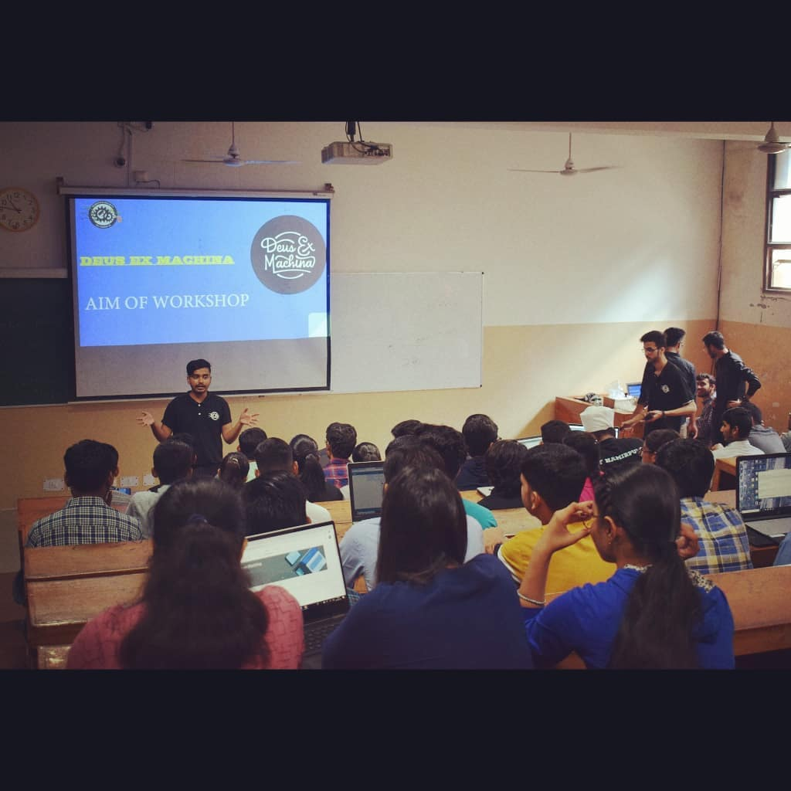
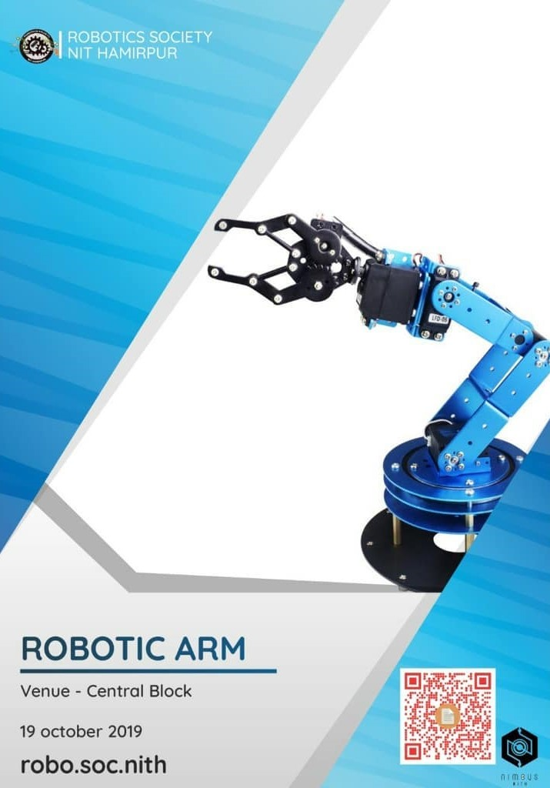
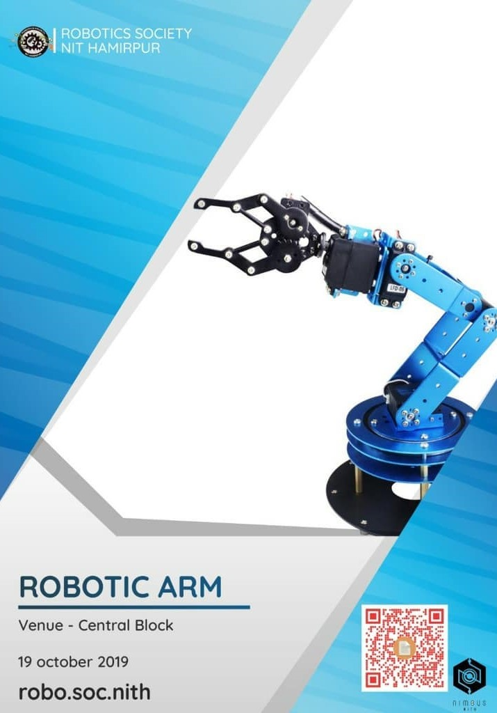
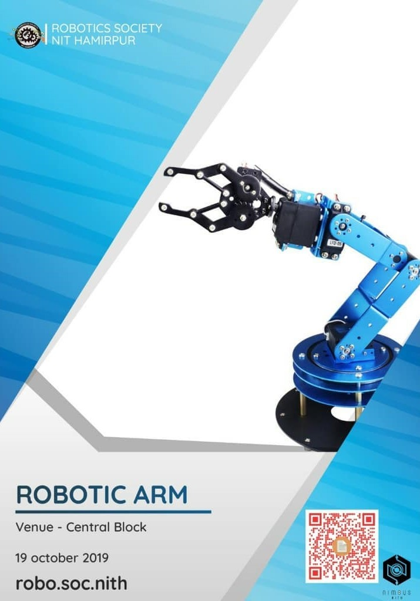

ROBOTICS WORKSHOPS
Greetings First Year
We were glad to see you all perform so well with so much zeal and enthusiasm in the AI Bot Workshop.
Now do you want to climb the higher steps of the stair and carry forward your zest in the domain of Robotics and get hands-on-experience in the blossoming field of Artificial Intelligence, Computer Vision, IOT and much more?
If your answer is yes, then gear up for the interviews. Extemporize and evince your skillset to become a part of Robotics Society,NIT Hamirpur.
Even if you missed out the chance to attend the workshop and begin your expertise in this field, walk-in for the interviews as opportunity seldom knocks twice.
Seize this opportunity and register for the interviews at:
https://forms.gle/aQ2nb8kPS6xbD2mS8
star rating:

 

